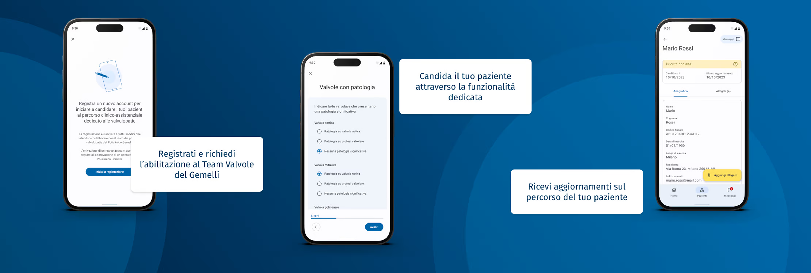

Overview
With
Finsa SPA
Year
2023
Sector
Healthcare
Location
Milan, Italy
Valvpath: Easing the Appointment and Admission Process

Goal
The Gemelli Hospital, a major private healthcare provider in Italy, partnered with Finsa to enhance its specialized cardiology program, “Il Percorso Valvulopatia.” The project aimed to streamline the appointment system and improve the overall admission process for patients referred by regional physicians.
We set out to map the end-to-end journey for patients and medical staff, improve communication, and ensure greater transparency and coordination throughout the application process.
We set out to map the end-to-end journey for patients and medical staff, improve communication, and ensure greater transparency and coordination throughout the application process.
Role & Contributions
Finsa, as the main consulting partner, approached this project from an end-to-end service design perspective; from research to UX/UI design and development.
My role evolved over the course of the project, starting in the last part of the research phase and continuing through design and development. I contributed to the service definition and supported prototyping and testing. I shaped the user interface and microinteractions for both mobile and desktop applications, and I handled design handoff, usability testing, and iterative refinement.
My role evolved over the course of the project, starting in the last part of the research phase and continuing through design and development. I contributed to the service definition and supported prototyping and testing. I shaped the user interface and microinteractions for both mobile and desktop applications, and I handled design handoff, usability testing, and iterative refinement.
Key Takeaways
The discovery phase was crucial in revealing inefficiencies in the existing application system and clarifying where to intervene. A more structured, step-by-step process helped reduce complexity during admissions, while more transparent communication tools improved the experience for all stakeholders involved.
© designed + coded by ismael godinez | 2025